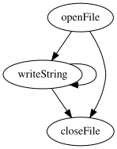
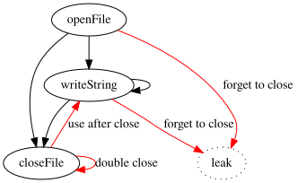
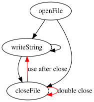
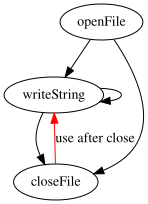

Lain is a new systems programming language. You can think of it as Rust: The Good Parts or a modernized, stripped-down Ada. It features a strong static type system, linear types, capability-based security, and strong modularity.
This article is an introduction to the language. The first few sections are high-level: they are about the design and the mindset of the language. The next two sections, about linear types and capability-based security, are much more detailed and technical: they are meant to prove to the reader that the claims being made about security and correctness are true.
Contents
- Design Goals
- Anti-Features
- Features
- Language Overview
- Linear Types
- Capability-Based Security
- Status and Future Work
- Getting Involved
- Conclusion
Design Goals
There is a section in the rationale that explains the design goals for Lain, but it boils down to two things:
- Simplicity
- Strictness
Simplicity means different things to different people. Some use it to mean familiarity, or ease of use, or even terseness. Simplicity here has a straightforward definition: it is the amount of information it takes to describe a system.
Complex systems, with lots of moving parts that impinge on one another, cannot be described briefly. Rube Goldberg machines, biology, and C++ are complex systems. Python is a complex system, despite being “easy” to use1. Simple systems have short descriptions.
Simplicity is an overriding goal because programming languages are not tools. A programming language is the toolbox, plus the building material, plus the laws of physics of the universe where the product is being built. You can, sometimes, in rare situations, hide a complex system under a simple interface. But not programming languages, because complex programming languages are like a universe where the gravitational constant changes daily.
There’s this famous quiz of the C language, where you have all these strange-looking programs and have to decide what they output. And people who have been working with the language for years struggle to answer correctly because the questions refer to subtle and obscure features of the C specification.
If you think figuring out what the program does is a fun puzzle, Lain is not for you. Language lawyering is a design flaw: if two people can look at the same basic program and disagree about its behaviour, that’s a problem.
Lain is simple. Short spec, thin runtime, small compiler.
To give a concrete example: the linear type system was designed with brutal simplicity in mind. Consequently, Lain’s equivalent of a borrow checker is less than 600 lines of code, including the implementation of borrowing and other ergonomic features.
The goal here is that the entire programming language should fit in your head, that you should be able to read the specification from beginning to end and know all there is to know about the language.
Strictness is half language features, and half a change in mindset.
If planes were flown like we write code, we’d have daily crashes, of course, but beyond that, the response to every plane crash would be: “only a bad pilot blames their plane! If they’d read subparagraph 71 of section 7.1.5.5 of the C++, er, 737 spec, they’d know that at 13:51 PM on the vernal equinox the wings fall off the plane.”
This doesn’t happen in aviation, because in aviation we have decided, correctly, that human error is an intrinsic and inseparable part of human activity. And so we have built concentric layers of mechanical checks and balances around pilots, to take on part of the load of flying. Because humans are tired, they are burned out, they have limited focus, limited working memory, they are traumatized by writing executable YAML, etc.
Mechanical processes—such as type systems, type checking, formal verification, design by contract, static assertion checking, dynamic assertion checking—are independent of the skill of the programmer. Mechanical processes scale, unlike berating people to simply write fewer bugs.
Strictness is rarely one big language feature, rather, it’s about learning from the design flaws in other languages, the “death by a thousand cuts”2, and preventing the causes of each of them. This can be hard because programmers get very attached to the flaws.
An example: there is a feature of C syntax where, for terseness, you can write
if statements without braces. This introduces a
syntactic ambiguity: it’s
called the “dangling else” problem. The fact that
there’s a Wikipedia
article about it should suggest that this is bad. This isn’t some abstract
academic concern: it has caused real-world security
vulnerabilities.
Now, if you suggest that this is a flaw, some programmers will invoke the old thought-terminating cliche: “only a bad craftsman blames his tools!”. But the tradeoff here is obvious: you save a few bytes and a few milliseconds of typing, but you roll the dice and possibly introduce a CVE that causes billions of dollars of harm. It’s self-evidently a design flaw, but if you suggest to programmers that they should add the braces, they will kick and scream as if you’re taking away some fundamental freedom.
Lain’s syntax was designed with language security principles in mind: it is context-free, it can be parsed from a grammar, there’s no “lexer hack”, there are no strange, ad-hoc ambiguity-resolution mechanisms. The pragmatics of the syntax are designed to minimize confusion and ambiguity.
For another example, consider the problem of operator precedence: anyone can
remember PEMDAS, but programming languages
have many categories of
binary operators—arithmetic, comparison, bitwise, Boolean—and mixing them
together creates room for error (what does x ^ y && z / w evaluate to?). So in
Lain there is simply no operator precedence: any binary expression deeper
than one level is fully parenthesized. You have to type more, but we are not
typists, we are programmers, and our task is to communicate to others what we
want computers to do. When in doubt: simplify by paring down the language.
This isn’t for everyone. But it is for me, because after ten years in the industry, the last thing I want from a programming language is “power”. What I want are fewer nightmares. The “liberties” that programming languages provide feel like expressive power until your codebase becomes a mental health superfund site.
Anti-Features
Before going over the language features, I’d like to list the anti-features. Here are the things Lain proudly doesn’t have:
-
There are no pervasive
NULLs, and therefore no null pointer dereference errors. You have to use an explicitOptiontype. -
There is no garbage collection, so the runtime can be thin and performance is predictable.
-
There are no exceptions and no stack unwinding and no destructors.
-
There is no surprise control flow: you have conditionals, loops, and function calls. And nothing else.
-
There are no implicit type conversions anywhere.
-
More generally: there are no implicit function calls. If it’s not in the source code, it’s not happening, and you’re not paying the cost of it.
-
There is no global state.
-
There is no runtime reflection.
-
There are no macros.
-
There are no Java or Python-style
@Annotations. -
There is no type inference: type information flows in only one direction, and function parameters, local variables, etc. have to have their types annotated.
-
There is no first-class async3.
-
Function overloading is very restricted through typeclasses (think C++ concepts). And the basic arithmetic operators cannot be overloaded4.
-
There is no syntactic ambiguity: no dangling else (and, therefore, no
gotofail), no arithmetic precedence, no syntactic precedence rules of any kind. -
There is no syntactic extension: you can’t, for example, introduce new infix operators.
Features
What Lain does have:
-
A strong, static type system that’s not too big-brained.
-
A type system which allows resources to be handled correctly and safely without runtime overhead. “Resource” here means memory and anything that has an explicit lifecycle of create-use-destroy: file handles, sockets, database handles.
-
Capability-based security, which prevents supply chain attacks. Your left-pad dependency can’t be compromised to upload the contents of your disk to a remote server. This is because code that performs network access has to be explicitly given a network capability, code that performs filesystem access needs a filesystem capability, etc. A string-padding function that claims to need network access instantly stands out. Capabilities are unforgeable, secure authorization tokens for code.
-
A strong, Ada-inspired module system which is not tied to filesystem structure and which separates module interfaces from implementations.
-
Sum types with pattern matching and exhaustiveness checking.
-
Type classes, as in Haskell, for restricted function overloading. As in Haskell, type parameters can be constrained to only accept types that implement a given typeclass.
-
A strict, context-free, unambiguous syntax, informed by langsec ideas.
Language Overview
The largest unit of code organization is the module. Modules have explicit names and are decoupled from the filesystem, like Haskell and unlike Python. Modules are divided into an interface and an implementation, like Ada or OCaml.
This is not, as in C or C++, a hack to enable separate compilation. It’s about readability and separation of concerns. The interface file contains declarations that are public, but no code. The implementation file contains the implementations of what is in the interface file, as well as private declarations.
There are five kinds of declaration:
- Constants.
- Types.
- Functions.
- Typeclasses.
- Typeclass instances.
Each of these can either be public (by appearing in the interface file) or private, which determines whether they are importable by other modules. Types have an additional visibility state: opaque, which means they can be imported by other modules, but they cannot be constructed or their contents accessed outside the module, except through the module’s public API. Opaque types are the obvious choice for data structures whose internals are hidden.
Functions work like you expect: they take values and return them. Instead of
void there is a Unit type with a constant called nil.
Typeclasses define an interface that types can conform to, and instances define how a particular type implements a particular typeclass.
Types and functions can be generic. The way generics work is slightly different than in most languages, due to the linearity system.
Linear Types
It is difficult to advertise a language as being “simple” and then start talking about “linear types” and “type universes”, but it is only the words that are new. The concepts are simple. Lain’s entire linear type system fits in a page. So, this isn’t some abstract ivory tower feature that you need a PhD in category theory to understand.
Linear types let us have manual memory management, without runtime overhead, and without security vulnerabilities: they prevent memory leaks, use-after-free, and double-free errors.
This extends beyond memory to anything that has a lifecycle, where we have to create it, use it, and destroy it in a certain order. File handles, network sockets, database handles, locks and mutexes: the correct usage of these objects can be enforced at compile time.
First, I’ll explain the motivation: why do we need linear types? Then I’ll explain what they are, and how they provide safety.
Motivation
Consider a file handling API:
type File
func openFile(path string) File
func writeString(file File, content string) File
func closeFile(file File)
An experienced programmer understands the implicit lifecycle of the File
object:
- We create a
Filehandle by callingopenFile. - We write to the handle zero or more times.
- We close the file handle by calling
closeFile.
We can depict this graphically like this:

But, crucially: this lifecycle is not enforced by the compiler. There are a number of erroneous transitions that we don’t consider, but which are technically possible:

These fall into two categories:
-
Leaks: we can forget to call
closeFile, e.g.:var file = openFile("hello.txt") writeString(file, "Hello, world!") // Forgot to close -
Use-After-Close: and we can call
writeStringon aFileobject that has already been closed:closeFile(file) writeString(file, "Goodbye, world!")And we can close the file handle after it has been closed:
closeFile(file) closeFile(file)
In a short linear program like this, we aren’t likely to make these mistakes. But when handles are stored in data structures and shuffled around, and the lifecycle calls are separated across time and space, these errors become more common.
And they don’t just apply to files. Consider a database access API:
type Db
func connect(host string) Db
func query(db Db, query string) Rows
func close(db Db)
Again: after calling close we can still call
query and close. And we can
also forget to call close at all.
And — crucially — consider this memory management API:
type Pointer_T
func allocate(value T) Pointer_T
func load(ptr Pointer_T) T
func store(ptr Pointer_T, value T)
func free(ptr Pointer_T)
Here, again, we can forget to call free after
allocating a pointer, we can
call free twice on the same pointer, and, more
disastrously, we can call
load and store on a pointer that has been freed.
Everywhere we have resources — types with an associated lifecycle, where they must be created, used, and destroyed, in that order — we have the same kind of errors: forgetting to destroy a value, or using a value after it has been destroyed.
In the context of memory management, pointer lifecycle errors are so disastrous they have their own names:
Naturally, computer scientists have attempted to attack these problems. The traditional approach is called static analysis: a group of PhD’s will write a program that goes through the source code and performs various checks and finds places where these errors may occur.
Reams and reams of papers, conference proceedings, university slides, etc. have been written on the use of static analysis to catch these errors. But the problem with static analysis is threefold:
-
It is a moving target. While type systems are relatively fixed — i.e., the type checking rules are the same across language versions — static analyzers tend to change with each version, so that in each newer version of the software you get more and more sophisticated heuristics.
-
Like unit tests, it can usually show the presence of bugs, but not their absence. There may be false positives — code that is perfectly fine but that the static analyzer flags as incorrect — but more dangerous is the false negative, where the static analyzer returns an all clear on code that has a vulnerability.
-
Static analysis is an opaque pile of heuristics. Because the analyses are always changing, the programmer is not expected to develop a mental model of the static analyzer, and to write code with that model in mind. Instead, they are expected to write the code they usually write, then throw the static analyzer at it and hope for the best.
What we want is a way to solve these problems that is static and complete. Static in that it is a fixed set of rules that you can learn once and remember, like how a type system works. Complete in that is has no false negatives, and every lifecycle error is caught.
And, above all: we want it to be simple, so it can be wholly understood by the programmer working on it.
So, to summarize our requirements:
-
Correctness Requirement: We want a way to ensure that resources are used in the correct lifecycle.
-
Simplicity Requirement: We want that mechanism to be simple, that is, a programmer should be able to hold it in their head. This rules out complicated solutions involving theorem proving, SMT solvers, symbolic execution, etc.
-
Staticity Requirement: We want it to be a fixed set of rules and not an ever changing pile of heuristics.
All these goals are achievable: the solution is linear types.
What Linear Types Are
In the physical world, an object occupies a single point in space, and objects can move from one place to the other. Copying an object, however, is impossible. Computers invert this: copying is the primitive operation. While an object in memory resides in a single place, references or pointers to that object can be copied any number of times, and passed around through threads, and this freedom to copy things wildly is at the root of all resource-related security vulnerabilities.
A type is a set of values that share some structure. A linear type is a type whose values can only be used once.
Linear values work like real-world objects: they occupy a single point in space, and they can be passed around, but not duplicated. This restriction may sound onerous (and unrelated to the problem) but we will see it isn’t.
Lain’s linear type system is defined by just two rules: the Linear Universe Rule and the Use-Once Rule.
Universes
First, the set of types is divided into two universes: the free universe, containing types which can be used any number of times (like booleans, machine sized integers, floats, records containing free types, etc.); and the linear universe, containing linear types, which usually represent resources (pointers, file handles, database handles, etc.).
Types enter the linear universe in one of two ways:
The first is by fiat: a type can simply be declared linear, even though it only contains free types. We’ll see later why this is useful.
type Pos own {
x int
y int
}
The second is by containment: linear types can be thought of as being “viral”. If a type contains a value of a linear type, it automatically becomes linear.
So, if you have a linear type T, then a record
like:
type Example own {
a A
b B
c Pair_T_A
}
is linear because the field c contains a type
which in turn contains T. A
union or enum where one of the variants contains a linear type is,
unsurprisingly, linear. You can’t sneak a linear type into a free type.
The virality of linear types ensures that you can’t escape linearity by accident.
The Use-Once Rule
A value of a linear type must be used once and only once. Not can: must. It cannot be used zero times. This can be enforced entirely at compile time through a very simple set of checks.
To understand what “using” a linear value means, let’s look at some examples.
Suppose you have a function f that returns a
value of a linear type L.
Then, the following code:
{
var x = f()
}
is incorrect. x is a variable of a linear type,
and it is used zero
times. The compiler will complain that x is being
silently discarded.
Similarly, if you have:
{
f()
}
The compiler will complain that the return value of f is being silently
discarded, which you can’t do to a linear type.
If you have:
{
var x = f()
g(mov x)
h(mov x)
}
The compiler will complain that x is being used
twice: it is passed into
g, at which point is it said to be
consumed, but then it is passed into
h, and that’s not allowed.
This code, however, passes: x is used once and
exactly once:
{
var x = f()
g(mov x)
}
“Used” does not, however, mean “appears once in the code”. Consider how if
statements work. The compiler will complain about the following code, because
even though x appears only once in the source
code, it is not being “used
once”, rather it’s being used — how shall I put it? 0.5 times?:
{
var x = f()
if cond() {
g(mov x)
} else {
// Do nothing.
}
}
The variable x is consumed in one branch but not
the other, and the compiler
isn’t happy. If we change the code to this:
{
var x = f()
if cond() {
g(mov x)
} else {
h(mov x)
}
}
Then we’re good. The rule here is that a variable of a linear type, defined
outside an if statement, must be used either zero
times in that statement,
or exactly once in each branch.
A similar restriction applies to loops. We can’t do this:
{
var x = f()
while cond() {
g(mov x)
}
}
Because even though x appears once, it is
used more than once: it is used
once in each iteration. The rule here is that a variable of a linear type,
defined outside a loop, cannot appear in the body of the loop.
And that’s it. That’s all there is to it. We have a fixed set of rules, and they’re so brief you can learn them in a few minutes. So we’re satisfying the simplicity and staticity requirements listed in the previous section.
But do linear types satisfy the correctness requirement? In the next section, we’ll see how linear types make it possible to enforce that a value should be used in accordance to a lifecycle.
Linear Types and Safety
Let’s consider a linear file system API. We’ll use the syntax for Lain module specifications:
type File own {
handle *int
}
func openFile(path string) File
func writeString(file File, content string) File
func closeFile(file File)
The openFile function is fairly normal: takes a
path and returns a linear
File object.
writeString is where things are different: it
takes a linear File object
(and consumes it), and a string, and it returns a “new” linear File
object. “New” is in quotes because it is a fresh linear value only from the
perspective of the type system: it is still a handle to the same file. But don’t
think about the implementation too much: we’ll look into how this is implemented
later.
closeFile is the destructor for the File type, and is the terminus of the
lifecycle graph: a File enters and does not leave,
and the object is disposed
of. Let’s see how linear types help us write safe code.
Can we leak a File object? No:
var file = openFile("test.txt")
// Do nothing.
The compiler will complain: the variable file is
used zero
times. Alternatively:
var file = openFile("test.txt")
writeString(mov file, "Hello, world!")
The return value of writeString is a linear File object, and it is being
silently discarded. The compiler will complain at us.
We can strike the “leak” transitions from the lifecycle graph:

Can we close a file twice? No:
var file = openFile("test.txt")
closeFile(mov file)
closeFile(mov file)
The compiler will complain that you’re trying to consume a linear variable twice. So we can strike the “double close” erroneous transition from the lifecycle graph:

And you can see where this is going. Can we write to a file after closing it? No:
var file = openFile("test.txt")
closeFile(mov file)
var file2 = writeString(mov file, "Doing some mischief.")
The compiler will, again, complain that we’re consuming file twice. So we can
strike the “use after close” transition from the lifecycle graph:

And we have come full circle: the lifecycle that the compiler enforces is exactly, one-to-one, the lifecycle that we intended.
There is, ultimately, one and only one way to use this API such that the compiler doesn’t complain:
var f = openFile("test.txt")
var f1 = writeString(mov f, "First line")
var f2 = writeString(mov f1, "Another line")
// ...
var f15 = writeString(mov f14, "Last line")
closeFile(mov f15)
Note how the file value is “threaded” through the code, and each linear variable is used exactly once.
And now we are three for three with the requirements we outlined in the previous section:
-
Correctness Requirement: Is it correct? Yes: linear types allow us to define APIs in such a way that the compiler enforces the lifecycle perfectly.
-
Simplicity Requirement: Is it simple? Yes: the type system rules fit in a napkin. There’s no need to use an SMT solver, or to prove theorems about the code, or do symbolic execution and explore the state space of the program. The linearity checks are simple: we go over the code and count the number of times a variable appears, taking care to handle loops and
ifstatements correctly. And also we ensure that linear values can’t be discarded silently. -
Staticity Requirement: Is it an ever-growing, ever-changing pile of heuristics? No: it is a fixed set of rules. Learn it once and use it forever.
A Safe Database API
And does this solution generalize? Let’s consider a linear database API:
type Db own {
handle *int
}
type DbRowsPair own {
db Db
rows Rows
}
func connect(host string) own Db
func query(own db Db, query string) own DbRowsPair
func close(own db Db)
type Db! {
handle *int
}
type DbRowsPair! {
db Db!
rows Rows
}
func connect(host string) Db!
func query(db Db!, query string) DbRowsPair!
func close(db Db!)
type Db own {
handle *int
}
type DbRowsPair own {
db Db
rows Rows
}
func connect(host string) Db
func query(db Db, query string) DbRowsPair
func close(db Db)
This one’s a bit more involved: the query
function has to return a tuple
containing both the new Db handle, and the result
set.
Again: we can’t leak a database handle:
var db = connect("localhost")
// Do nothing.
Because the compiler will point out that db is
never consumed. We can’t close a database handle
twice:
var db = connect("localhost")
close(mov db)
close(mov db) // error: `db` consumed again.
Because db is used twice. Analogously, we can’t
query a database once it’s closed:
var db = connect("localhost")
close(mov db)
var res = query(mov db, "SELECT ...")
var db1 = mov res.db
var rows = res.rows
close(mov db) // error: `db` consumed again.
// another error: `db1` never consumed.
For the same reason. The only way to use the database correctly is:
var db = connect("localhost")
var res = query(mov db, "SELECT ...")
var db1 = mov res.db
// Iterate over the rows or some such.
close(mov db1)
Borrowing
Returning tuples from every function and threading linear values through the code is very verbose.
It is also often a violation of the principle of least privilege: linear values,
in a sense, have “root permissions”. If you have a linear value, you can destroy
it. Consider the linear pointer API described above: the load function could
internally deallocate the pointer and allocate it again.
We wouldn’t expect that to happen, but the whole point is to be defensive. We want the language to give us some guarantees: if a function should only be allowed to read from a linear value, but not deallocate it or mutate its interior, we want a way to represent that.
Borrowing is stolen lock, stock, and barrel from Rust. It improves ergonomics by allowing us to treat a Linear value as Free within a delineated context. And it allows us to degrade permissions: functions that should only be able to read data from a linear value can take a read-only reference, functions that should be able to mutate (but not destroy) a linear value can take a mutable reference.
Passing the linear value itself is the highest level of permissions: it allows the receiving function to do anything whatever with that value, by taking complete ownership of it.
Unlike Rust, Lain’s borrowing is more restricted. The tradeoff is: you have to type more, but it’s syntactically clearer where region lifetimes end, and the model is conceptually simpler. This is why the linearity checker is a mere 600 lines of OCaml.
Capability-Based Security
If you read software engineering literature from the 80’s, the overwhelming concern is about software reuse. Today, we have the opposite problem: package ecosystems contain hundreds of thousands of packages, written by many authors, and applications transitively have thousands of dependencies. This introduces a new category of security vulnerability: the supply chain attack, where an attacker adds malware to a single library used transitively by millions of computers.
But why is a single malware dependency out of thousands enough to compromise
security? Because code is overwhelmingly permissionless. Or, rather: all code
has the same permission level: do anything. Without inspecting the code, you
have no way of knowing whether leftPad pads a
string or reads your entire
home directory and uploads it to a remote server.
Lain’s solution is capability-based security. Code should be permissioned. To access the filesystem, or the network, or other privileged resources, libraries should require permission to do so. Then it is evident, from function signatures, what each library is able to do, and what level of auditing is required.
Furthermore: capabilities can be arbitrarily granular. Beneath the capability to access the entire filesystem, we can have a capability to access a specific directory and its contents, or just a specific file, further divided into read, write, and read-write permissions. For network access, we can have capabilities to access a specific host, or capabilities to read, write, and read-write to a socket.
Access to the computer clock, too, should be restricted, since accurate timing information can be used by malicious or compromised dependencies to carry out a timing attack or exploit a side-channel vulnerability such as Spectre.
Linear Capabilities
A capability is a value that represents an unforgeable proof of having permission to perform an action. They have the following properties:
-
Capabilities can be destroyed.
-
Capabilities can be surrendered by passing them to others.
-
Capabilities cannot be duplicated.
-
Capabilities cannot be acquired out of thin air: they must be passed by the client.
Capabilities in Lain are implemented as linear types: they are destroyed by being consumed, they are surrendered by simply passing the value to a function (i.e., by being consumed), they are non-duplicable since linear types cannot be duplicated. The fourth restriction must be implemented manually by the programmer.
A Capability-Secure Filesystem API
Consider a non-capability-secure filesystem API:
// File and directory paths.
type Path {
mov handle *int
}
// Creating and disposing of paths.
func Make_Path(value string) Path
func Dispose_Path(mov path Path)
// Reading and writing.
func Read_File(borrow path Path) string
func Write_File(mut borrow path Path, content string)
(Error handling etc. omitted for clarity.)
Here, any client can construct a path from a string, then read the file pointed to by that path or write to it. A compromised transitive dependency could then read the contents of your home directory, or any file in the filesystem that the process has access to, like so:
var p = Parse_Path("/etc/passwd")
var secrets = Read_File(borrow p)
// Send this over the network, using an equally capability-insecure network API.
uploadToCompromisedServer(secrets)
In the context of code running on a programmer’s personal computer, that means personal information. In the context of code running on an application server, that means confidential bussiness information.
What does a capability-secure filesystem API look like? Like this:
type Path { mov handle *int }
// The filesystem access capability.
type Filesystem { mov capability *int }
// Given a read reference to the filesystem access capability,
// get the root directory.
func Get_Root(borrow fs Filesystem) Path
// Given a directory path, append a directory or
// file name at the end.
func Append(borrow path Path, name string) Path
// Reading and writing.
func Read_File(borrow path Path) string
func Write_File(mut borrow path Path, content string)
This demonstrates the hierarchical nature of capabilities, and how granular we can go:
-
If you have a
Filesystemcapability, you can get thePathto the root directory. This is essentially read/write access to the entire filesystem. -
If you have a
Pathto a directory, you can get a path to a subdirectory or a file, but you can’t go up from a directory to its parent. -
If you have a
Pathto a file, you can read from it or write to it.
Each capability can only be created by providing proof of a higher-level, more powerful, broader capability.
Then, if you have a logging library that takes a Path to the logs directory,
you know it has access to that directory and to that directory only5. If
a library doesn’t take a Filesystem capability, it
has no access to the
filesystem.
But: how do we create a Filesystem value? The
next section explains this.
The Root Capability
Capabilities cannot be created out of thin air: they can only be created by proving proof that the client has access to a more powerful capability, for example by passing a reference to that capability. This recursion has to end somewhere.
The root of the capability hierarchy is a value of type Root_Capability. This
is the first argument to the entrypoint function of an Lain program. For our
capability-secure filesystem API, we’d add a couple of functions:
// Acquire the filesystem capability from a reference
// to the root capability.
func Get_Filesystem(borrow root Root_Capability) Filesystem
// Relinquish the filesystem capability.
func Release_Filesystem(mov fs Filesystem)
And we can use it like so:
func Main(mov root Root_Capability) Root_Capability {
// Acquire a filesystem capability.
var fs = Get_Filesystem(borrow root)
// Get the root directory.
var r = Get_Root(borrow fs)
// Get the path to the `/var` directory.
var p = Append(borrow r, "var")
// Do something with the path to the `/var` directory, confident that nothing
// this dependency does can go outside `/var`.
Do_Something(mov p)
// Afterwards, relinquish the filesystem capability.
Release_Filesystem(mov fs)
// Finally, end the program by returning the root capability.
return mov root
}
Status and Future Work
There is a bootstrapping compiler written in OCaml, and a specification. Software is only ever asymptotically finished, but the compiler implements the entire language, and the compiler and spec are at a level of maturity where I can write simple programs and talk about it in public.
The compiler is a very simple, whole program compiler that outputs C. Separate compilation, for added performance, is not yet implemented but is in the roadmap.
The immediate next steps are:
- Write the basic parts of the standard library.
- A build system and package manager.
- Fast separate compilation support.
If I can allocate the time, I’d like to use OpenAI’s finetuning API to teach a code completion model to write Lain for me. I had some promising results teaching Lain to ChatGPT interactively. I think the language is uniquely good for this, because the separation of module interfaces and implementations means I can probably design an interface and have a model complete the implementation for me.
Getting Involved
A beginning is a unique time. Like annealing: the atoms are in rapid motion, and have yet to settle in a fixed configuration. Decisions made early have a vastly disproportionate impact. So if you have strong opinions about standard library APIs, or build systems and package managers, or security, I’d like to hear from you.
There’s a small Discord for the language, but the best way to communicate is probably through public GitHub issues. Or you can ping me on Twitter, which is the fastest way to reach me.
Conclusion
And without further ado:
proc main() int {
printLn("Hello, world!")
return 0
}
Footnotes
-
Because of dynamic typing, the absurd scoping rules, runtime reflection, decorators, constant leakage of implementation details, context-sensitive syntax, etc. ↩
-
Here is a great article on the long litany of C design flaws that have been copied into other languages. ↩
-
There are two ways to build a general-purpose programming language:
- Add features to specialize the language to every domain.
- Don’t specialize to any one domain.
Only the latter approach is scalable. Async is a very specific feature, and every way of doing concurrency other than kernel threads has come and gone out of fashion (think Scala actors and Goroutines, two very admirable features). So when async goes out of fashion, it will be a big problem if Lain had async built right in the core language. ↩
-
Because the semantics are different. Is
a * bcommutative? Depends on whether they’re floats are matrices. Just be explicit and write out the function calls. ↩ -
Special paths like
..have to be handled specially. ↩